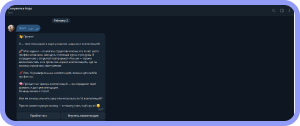
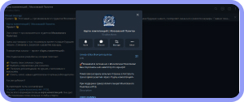
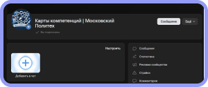
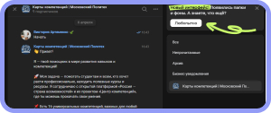
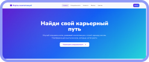

Карта компетенций для выпускника
Навигатор по развитию навыков для успешного трудоустройства
О проекте
«Карта компетенций для выпускника» — это проект, который помогает студентам Московского Политеха развивать гибкие навыки и успешно трудоустраиваться.
В 2026 году рынок труда стал рынком работодателя: вакансий меньше на 28%, а резюме больше на 37%. Компании отбирают по навыкам, а не по дипломам. Кандидаты с подтверждёнными компетенциями получают на 27% больше откликов.
Наш проект — это навигатор, который на основе данных диагностики РСВ подбирает персонализированные рекомендации для развития навыков. Мы уже собрали 16 направлений для развития компетенций.
Наши инструменты

Telegram-бот
Навигация по карте компетенций, образовательные материалы, квиз и обратная связь

Telegram-канал
Актуальные новости, подборки компетенций и проектов для развития

ВК-сообщество
Посты, обсуждения, анонсы мероприятий и удобный формат для аудитории ВКонтакте

ВК-бот
Интерактивный помощник в ВКонтакте — навигация, квиз, обратная связь

Сайт проекта
Профессиональный навигатор с картой компетенций, курсами и персонализированными рекомендациями
Все ссылки на инструменты и полезные материалы — на странице ресурсов
Перейти к ресурсам →